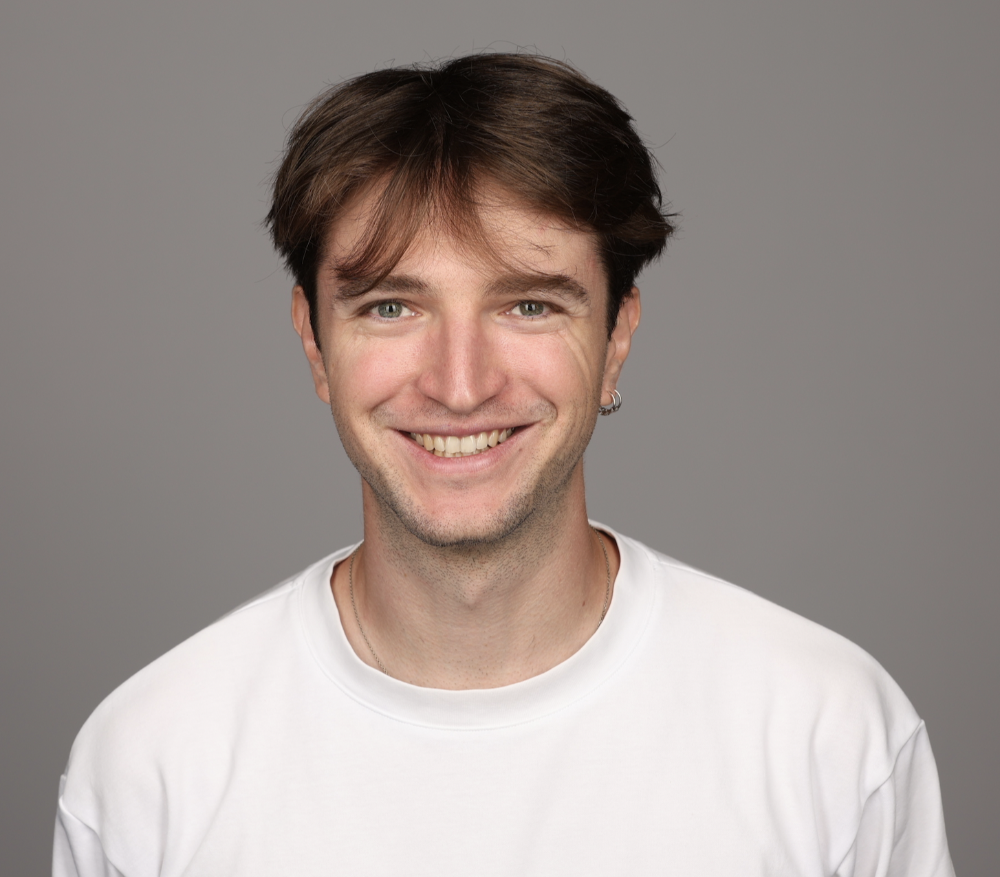

Clément Lalanne

Assistant Professor (MCF) @ University of Toulouse, associate to Institute of Mathematics of Toulouse.
AI co-chair @ ANITI.
My work focuses on Differential Privacy, Learning Theory, Statistics and Optimization.
Contact :
✉ clement.lalanne@math.univ-toulouse.fr
☎ +33 5 61 55 76 52
News
- May 2025 The preprint for our article Learning with Differentially Private (Sliced) Wasserstein Gradients (David Rodríguez-Vítores, Clément Lalanne, Jean-Michel Loubes) just got updated, including some interesting new experiments on private sliced-Wasserstein autoencoders !
- May 2025 Our article On the Private Estimation of Smooth Transport Maps (Clément Lalanne, Franck Iutzeler, Jean-Michel Loubes, Julien Chhor) just got accepted to ICML ! The camera-ready version of the article should soon be available, including some nice additions following the discussions with the reviewers. See you in Vancouver :)
- January 2025 The preprint for our new paper On the Private Estimation of Smooth Transport Maps (Clément Lalanne, Franck Iutzeler, Jean-Michel Loubes, Julien Chhor) is now available. Check it out!
- January 2025 The preprint for our new paper Learning with Differentially Private (Sliced) Wasserstein Gradients (David Rodríguez-Vítores, Clément Lalanne, Jean-Michel Loubes) is now available. Read it now!
- September 2024 I am thrilled to announce that I started a new position as a Maître de Conférences (french equivalent of Assistant Professor) at Université Toulouse 3 Paul Sabatier in Applied Mathematics. I will be pursuing my research within the Statistics and Optimization team of the Institut de Mathématiques de Toulouse.
- July 2024 What a week at ICML 2024 in Vienna, Austria where I presented a poster for our article Privately Learning Smooth Distributions on the Hypercube by Projections. Congratulations to the researchers for the high level of the presentations and to the organization team.


- May 2024 Our article Privately Learning Smooth Distributions on the Hypercube by Projections just got accepted to the 41st International Conference on Machine Learning. Looking forward to present our work in Vienna. Huge thanks to my coauthor Sébastien Gadat, and to the reviewers for the useful inputs and suggestions.
- 📰 News Archive
Publications
This publication list is automatically fetched and formatted from my HAL profile. In case of errors or omissions, please refer to my Google Scholar profile.
Loading publications...
Teaching
- Mathematical Methods for Supervised Learning (M1 SID University of Toulouse) : Course 2024-2025.
- Mathematics of Machine Learning (M2 MAPI3 University of Toulouse) : Course 2024-2025, Projects 2024-2025.
- 📰 Teaching Archive
Curriculum
- 2024-Today : Assistant Professor (MCF) in Applied Mathematics at University of Toulouse and Institute of Mathematics of Toulouse
- 2023-2024 : Postdoc @ Toulouse School of Economics (Toulouse Capitole University) with Jérôme Bolte and Sébastien Gadat
- 2020-2023 : PhD in Computer Science @ ENS Lyon under the supervision of Aurélien Garivier and Rémi Gribonval among the Inria OCKHAM team
- 2023 : I successfully defended my PhD thesis in computer science titled "On the tradeoffs of statistical learning with privacy" on October 4th 2023. You may find the manuscript here, and the slides here
- 2023 : Laureate of the Agrégation Externe de Mathématiques
- 2020-2023 : Teacher Assistant @ ENS Lyon. Topics : Machine Learning, Optimization, Data Bases and Data Mining, Competitive Programming, System Programming
- 2016-2020 : Undergrad @ ENS Ulm; Civil Servant student (Normalien) in Computer Science (major) and Mathematics (minor)
- 2020 : M.S. (Diplôme de l'ENS) in Computer Science with a minor in Mathematics from ENS Ulm
- 2019 : M.S. in Applied Mathematics, MVA from ENS Paris-Saclay
- 2019 : Internship : Nystagmus waveform extraction using convolutional dictionary learning with detrending, supervised by Nicolas Vayatis, Laurent Oudre and Thomas Moreau, CMLA
- 2018 : Internship : Storage-optimal continuous optimization, supervised by Volkan Cevher, EPFL in LIONS team
- 2017 : Internship : De-anonymization and privacy: Study of a random graph model, supervised by Florian Simatos, DISC of ISAE Supaero
- 2013-2016 : CPGE MP* @ Lycée Louis-Le-Grand & MPSI/MP @ Lycée Louis Barthou